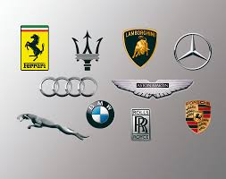

Mundo del Motor

Bienvenido a una web dedicada al apasionante universo de los coches.
Los automóviles han revolucionado la movilidad mundial desde finales del siglo XIX. Hoy en día existen múltiples tipos: deportivos, clásicos, eléctricos y de competición.
| Tipo | Velocidad media | Consumo |
|---|---|---|
| Deportivo | 320 km/h | Alto |
| Clásico | 180 km/h | Medio |
| Eléctrico | 250 km/h | Bajo |
| Competición | 370 km/h | Muy alto |